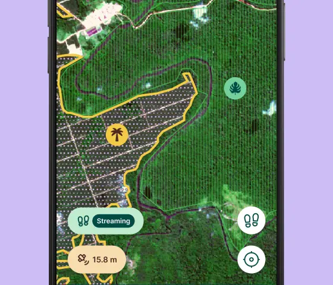

KRAMA
KRAMA
KRAMA
KRAMA
KRAMA is an independent organisation dedicated to strengthening trust and transparency across Cambodia’s value chains. We work with producers, businesses, and partners to enable credible traceability from origin to market.
We provide digital systems and institutional infrastructure that help value-chain actors demonstrate responsible practices, meet due-diligence requirements, and connect with global markets.
To strengthen trust across value chains through transparent, accountable, and verifiable production systems.
A connected ecosystem where people, products, and provenance are reliably linked through trusted traceability.

Updates on KRAMA initiatives, field activities, and regulatory developments.
Search and verify producers, products, and supply-chain actors recorded in KRAMA’s traceability registry.
Supports origin verification, due diligence, and EUDR compliance.
Submit information related to non-compliance or transparency concerns confidentially.